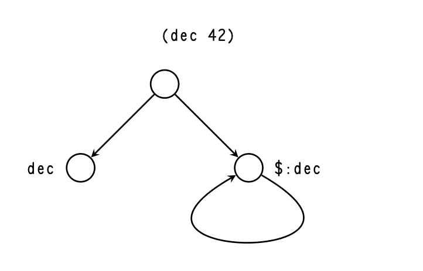
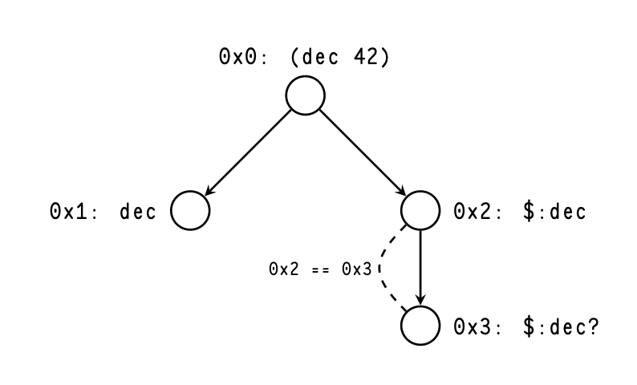
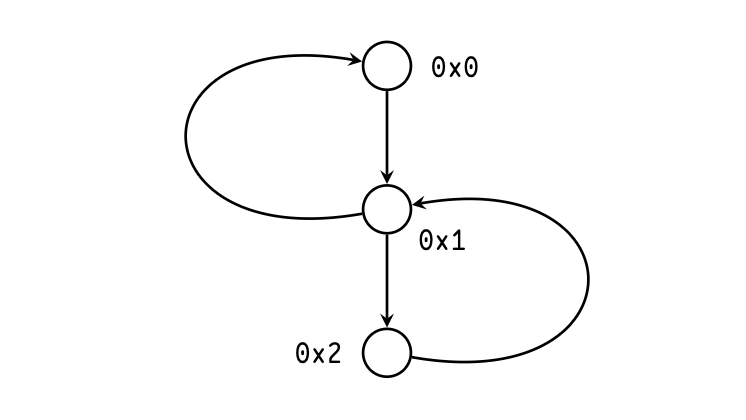
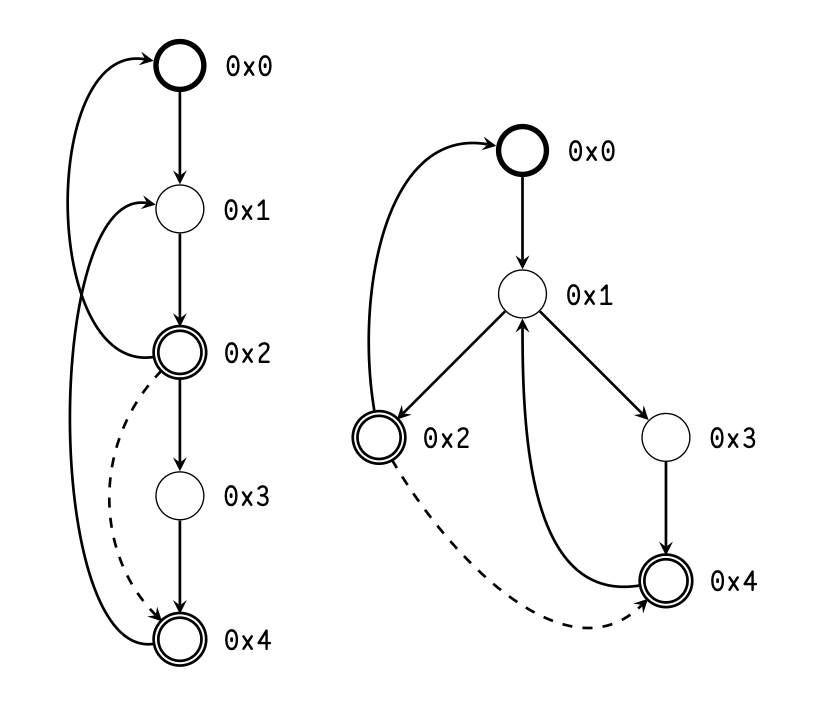
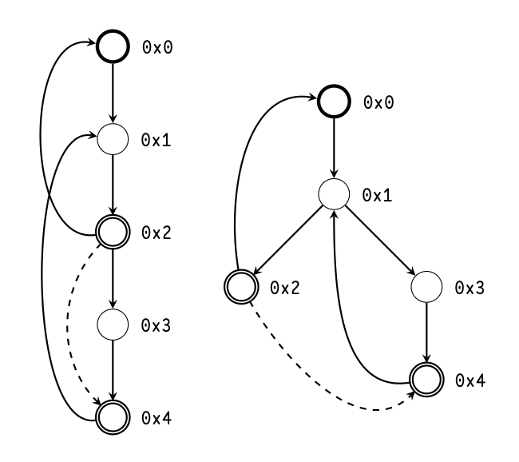
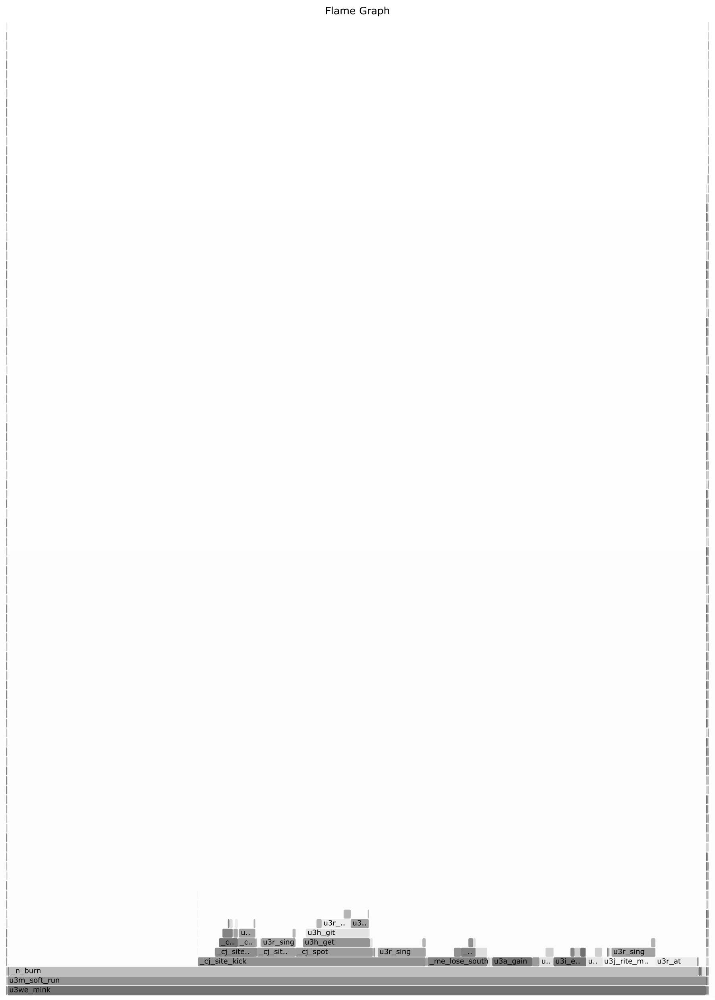
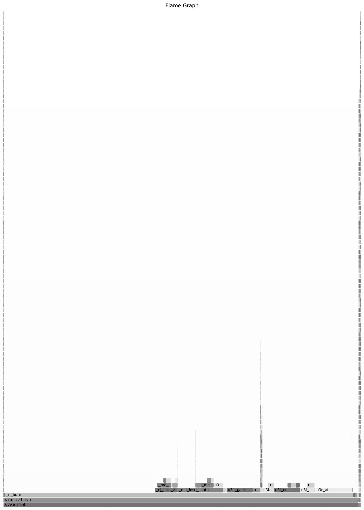

To date, the Nock combinator calculus or instruction set
(depending on one’s viewpoint) has been evaluated using
either a tree-walking interpreter or a bytecode interpreter. The
former has been found straightforward to implement but
regrettably slow in practice. Following a suggestion by
~ritpub-sipsyl to incorporate better information about what is
known about the subject into the compilation process, Urbit
engineers elaborated Subject Knowledge Analysis, or ska.
This static analysis pass is performed on a subject-formula
pair, producing a call graph and a subject mask. The latter
can be used to determine if two subject-formula pairs are
equivalent, allowing the reuse of analysis results. The
call graph can be used to introduce direct calls in the
bytecode interpreter, as well as to perform compile-time jet
matching. ska unlocks ample gains in practical Nock
performance, as well as enabling future optimizations and
analyses.
2 Dynamism of Nock
The Nock 2 operator is one of the two opcodes that are used
for Nock evaluation. From the Nock specification:
*[a2bc]*[*[ab]*[ac]]
Put plainly, we evaluate two operands of Nock 2 against the
given subject, then evaluate Nock with the product of the first
operand as a subject, and the product of the second operand
as a formula.
The compound Nock 9 operator is defined in terms of
other Nock operators:
*[a9bc]*[*[ac]2[01]0b]
Evaluation of the formula from the second operator yields a
noun, from which a formula to be evaluated is pulled with
Nock 0. That formula is then evaluated against that noun,
which is often referred to as a “core”.
Since Nock 9 is essentially a macro for Nock 2, we can
focus our attention on Nock 2. This operator is equivalent to
eval in other languages: execution of
dynamically generated
code. Unlike most languages, Nock does not have a notion of a
static call, and all function calls are implemented in terms
of eval. In practice, however, we can discover
formula
products *[ac]
for almost all Nock 2 sites, given the
subject.
Examples when we cannot do that, such as receiving
code to evaluate over the wire, or from the outer
virtualization context via Nock 12, or as a product of a
complex expression where we cannot reliably execute it at
compile time, are rare. In practice, these exceptions are
limited to either evaluating dynamically-supplied code
or running the Hoon compiler at run time, e.g. in vase
mode.1
For all other cases, e.g. Arvo, Gall agents, the subject’s code
contents do not often change and the result of static analysis
is likely to be reused until a kernel upgrade or Gall agent
upgrade respectively.
This static analysis procedure, dubbed “Subject Knowledge
Analysis”, is as follows: given a pair of a subject and a
formula, we construct the call graph for all Nock 2 sites for
which we have enough information, yielding call graph
information and subject mask. A new subject-formula pair
where the formula is equal to the analyzed formula, and the
parts of the subject included in the mask are equal to the
same parts from the previously analyzed subject, is considered
to be equivalent. Consider analyzing the subject-formula
pair:
[[dec1][%92%10[6%03]%02]]
Then a pair [[dec2][%92%10[6%03]%02]]
is equivalent to the first one in terms of the call graph
information: the different subnouns of the subject are never
used as code by the $ arm of the dec core. A pair of a
minimized subject and a formula thus constructs an object
equivalent to a function in other languages, with the masked
out parts of the subject being the function’s arguments.
Further in the text, we will refer to pairs (minimized
subject)-formula as functions that we discovered during the
analysis.
3 Motivation
In prior work on ska by ~ritpub-sipsyl and
~master-morzod, the
analysis was considered as a first step in compiling Nock to a
static single assignment intermediary representation language
(ssa ir) to introduce direct calls in Nock. In their absence,
Nock registerization, or any kind of optimization/analysis for
that matter is limited by the lack of knowledge about the call
target and the call product: in the ssa ir example, we would
not know which parts of a call’s subject are actually used by
the callee program.
For the current work, a simpler goal was set: the
introduction of direct calls and compile-time jet matching in
the Vere bytecode interpreter. Currently, the interpreter
has to, first, look up a Nock bytecode program in the
bytecode cache, and second, it has to dynamically
perform a jet matching routine at each Nock 9 call
site.2
With ska, the bytecode programs could have instructions for
direct calls into other bytecode programs, and a program
could also check if a given Nock 2 site matches some jet
information the program has already accumulated, thus
adding the jet driver directly into the bytecode stream if the
match was obtained.
4 Core Algorithm
To analyze a subject-formula pair, we run what is essentially a
partial Nock interpreter to propagate known information to
formulas deeper in the formula tree, and to accumulate call
graph information. Instead of a noun, the subject is a partial
noun described with the type $sock:
That is, $cape is a mask that
describes the shape of the
known parts of a given noun, and $sock is a pair
of a mask
and data, where unknown parts are stubbed with 0
or
~.
The treatment of the partial noun by that interpreter is
mostly trivial:
Autocons conses the partial products, normalizing
the mask and data if necessary.
Nock 0 grabs a subnoun from $sock if it can,
otherwise it returns unknown result [|~].
Nock 1 returns a fully known result.
Actual computations (Nock 3, Nock 4, and Nock 5)
return unknown result [|~]
– we do not attempt to
run all code at compile time, we just want to evaluate
code-generating expressions.
Nock 6 produces an intersection of the results of
branches, that is, only parts of the products that are
known and equal between branches.
Nock 7 composes formulas: the product of the first
formula is passed as a partial subject to the second
one.
Nock 10 edits the product of one formula with
the product of the other. If the recipient noun is
not known, and the donor noun is known at least
partially, cells will be created that lead to the edited
part.
Nock 8 and Nock 9 are desugared in terms of Nock
7, Nock 2, and autocons.
Nock 11 calls have their dynamic hint formula products
dropped and some hints are handled directly.
%spot hints are
used for debugging/verbose
printouts.
%fast hints are
used to accumulate cold state.
Nock 12 of the virtual Nock produces an unknown
result.
In the case of Nock 2, the operands are evaluated, and then we
check if the formula at this site is fully known. If it is not
known, the call is indirect – we cannot make any assumptions
about its product, so we return [|~].
If it is known, we do
two things:
We record information on subject usage as code for
each call below us in the stack, including the root call.
This step is needed to produce a minimized subject
for each call, which is necessary to avoid redoing the
work for the functions we already analyzed.
We enter a new frame of the partial interpreter,
executing/analyzing new $sock–formula pair
we
just got, returning the result of that analysis as a
product.
To track the code usage of the subjects of function calls,
the partial noun is paired with a structure to describe the flow
of data from the functions below us in the stack to the new
callsite. That data structure will be described later in the
performance section.
5 Loop handling
The most complicated part of the algorithm is the handling of
loops. Unlike the regular interpreter, where only one branch is
executed at a time, the partial interpreter enters both, so a
lack of loop handling would quickly lead to an infinite cycle in
the analysis, be it a simple decrement loop or mutual
recursion in the Hoon compiler.
5.1 Loop detection
One way to detect loops would be to simply compare
$sock-formula pairs that we have on the stack
with the one
that we are about to evaluate. That, however, would not work
with functions that, for example, recursively construct a list,
as the subject $sock would change from iteration
to iteration.
So instead of a simple equality check, we need to see if
the new subject (further referred to as kid subject, or
subject of the kid call) nests under the subject of the
supposedly matching function call on the stack (parent
subject, or subject of the parent call), given the current
information we have about the usage of parent subject as
code.
The problem is that the code usage information for
the parent is not complete until we analyzed all its
callees/descendants. Therefore, that loop guess would have to
be validated when we return from the loop, and before that,
no analysis of function calls in that loop can be finalized. We
can see that we have three kinds of function calls: ones
that are not a part of any cycle, and can be finalized
immediately, ones that are in the middle of a cycle and
cannot be finalized unless the entry point into that cycle
is finalized, and finally, those that are the entry points
into a cycle, whose finalization also means finalizing all
members of a cycle. Another interesting aspect is that we
do not know which kind of a function call we have on
entry, we know it only on return. For the non-finalizable
calls, we also do not know which call finalization they
depend on until that loop entry is finalized, since we could
always discover a new loop call that points deeper into the
stack.
5.2 Call graph topology
We first describe in more detail what an abstract call graph is
and how it is traversed and discovered in ska.
The call graph is a directed graph with the vertices
being the functions and the edges being function calls.
The graph has a root, which is the top-level function
that is being analyzed. We include function calls from
callers to callees, even if the calls are conditional: from
the point of view of the call graph topology, conditional
calls of functions B and C performed by a function A
are indistinguishable from consecutive calls, i.e. these
two Hoon expressions would yield the same call graph
shape (but the other information could, of course, be
different):
?:condition(func-ax)(func-bx)::5(func-b(func-ax))
We can see that, when we execute Nock, we traverse the
call graph in depth-first, head-first order, except we skip some
edges if they are conditional. As we enter other functions, the
path from the root vertex to the current one forms the
computational stack.
The abstract call graph may contain cycles. Figure 1 shows
the abstract call graph for Nock obtained from compiling
(dec42)
against ..ride subject. Firstly dec expression is
evaluated, which pulls +dec arm from a core in
the subject.
With the product of that expression, which is the dec core,
pinned to the subject, we edit that core with the argument 42,
then we pull the arm $ from that core. The $ arm call either
returns the decremented value or calls itself, incrementing the
counter.

Figure 1: Abstract call graph for (dec
42).
When we traverse that call graph, we cannot simply
follow the edge from $:dec to itself, as doing
so would
cause an infinite loop in the algorithm. Instead, when we
detect a loop call, or a backedge, we immediately return an
unknown result from the child call. As we traverse the call
graph, we enumerate the vertices, as shown in Figure
2.
Figure 2 also demonstrates that the ska representation of
the call graph is acyclic: back-pointing edges are replaced with
a forward-pointing edge to a new vertex that we do not
analyze through. Together with the fact that both branches
are traversed in Nock 6 analysis, ska call graph traversal
becomes a genuine depth-first, head-first traversal.
5.3 Loops as strongly connected
components
From the point of view of the abstract, cyclical call graph, a
set of functions that cannot be finalized unless all functions
from this set are finalized forms a strongly-connected
component (scc) of that call graph. Thus, handling of loops in
ska becomes a question of handling sccs. The
algorithm that
follows was developed by the author to detect and manage
sccs during the analysis. The process turned out to be quite
similar to Tarjan’s 1972 algorithm for finding sccs with some
differences:
In Tarjan’s algorithm, the graph is known ahead
of time, while in ska the graph is simultaneously
inferred with symbolic execution of Nock and
traversed.
Since Nock call graph is rooted, only one traversal is
necessary, and in this traversal the descendants down
the non-loop call edges are guaranteed to have higher
index values.
The latter fact allows for simpler comparisons and
simpler state management, allowing to have a stack of sccs
instead of a stack of vertices that are popped when an
scc is finalized. For example, when returning from a
vertex which is a member of a non-trivial scc in ska we
only have to check one boolean value and compare the
index of this vertex with the index of the entry of the
current scc with equality operator, so we do not have
to call arithmetic functions and pay Nock function call
overhead.
As the call graph is traversed, we keep track of the stack of
mutually independent sccs (that is, sccs whose
unions are
not sccs) by keeping track of the entry point (the earliest
vertex that has a backedge pointing to it) and the latch
(the latest vertex that has a backedge originating from
it).

Figure 2: Call graph for (dec 42) in the
middle ofska.
Vertices 0x2 and 0x3 form a loop (strongly connected
component, scc) with vertex 0x2 being the entry point
(magenta), and vertex 0x3 being the latest (i.e. rightmost,
deepest) vertex that belongs to that scc, also called a latch
of this scc (orange). The dashed gray line denotes the loop
assumptions that are to be validated upon exit from the
scc entry point. Vertex 0x3 is not analyzed through.
Suppose that we encounter a new backedge. To determine
whether it forms a new scc, or belongs to an already existing
one, it is sufficient to compare the parent vertex enumeration
label with the latch of the latest scc on the loop stack. If
the parent vertex is greater than the latch, a new scc
data structure is pushed on the stack; otherwise, the
top scc’s entry and latch are updated, and then that
scc is repeatedly merged with the one beneath it if the
connection condition is satisfied: the entry of the updated
scc is less than or equal to the latch of the preceding
scc.
Let us prove that this comparison is sufficient. Recall that
the enumeration labels are assigned in depth-first, head-first
order. If the backedge parent is equal to the latch of the scc,
the kid is a part of the scc since the kid is reachable by an
scc member, in this case, the parent, and a member
of scc is reachable from kid via the backedge (Figure
3).

Figure 3: New backedge points to the
latch of previous
scc, extending that scc.
If the parent label is greater than the latch, then either
they are on the same root path or not. In both cases, no
member of the scc can be reached from the parent, making
the parent, kid, and all vertices in between a new scc. These
scenarios are illustrated in Figure 4.

Figure 4: A new backedge points to a vertex
with a label
greater than the latch of the previous scc, creating a new
scc with 0x2 as entry and 0x4 as latch on the left, and 0x3
as an entry and 0x4 as a latch on the right.
Finally, if the parent label is less than the latch, then
either they are on the same root path or not.
If they are, the latch is the parent’s descendant, making
the latest scc reachable from the parent. Since the parent and
the kid are necessarily of the same root path, which makes the
kid reachable from the latch, making both the parent and the
kid vertices reachable from the scc, thus making the kid,
parent, and all vertices between them are part of the previous
scc.
If they are not, then the latch still has to be a parent’s
descendant. Let us sketch the proof by disproving the
contrary.
Suppose that the opposite is true. Then the parent vertex
is to the left of the latch, where “A is to the left of B" means
that A is entered before B and A is not B’s predecessor. The
latch is either on the same root path as the kid or it is to the
left of the kid vertex, since the latter is the latest vertex we
discovered. Since “leftness" is transitive, that means that the
parent is to the left of the kid, which is impossible since they
are on the same root path. Contradiction: the latch and the
parent are on the same root path, making the kid, parent
vertices, and vertices between them parts of the existing
scc. Illustrations for both scenarios are shown in Figure
5.

Figure 5: A new backedge points to a vertex
with a label
less than the latch of the previous scc, extending that scc
and moving the latch to a new position.
The condition for scc merging in case of scc extension is
the same. In fact scc extension can be represented in terms of
scc creation, together with merging with the topmost scc in
the loop stack.
Since loop validation is deferred until returning from the loop
entry point, subject usage by the loop calls is not recorded
until that point. At loop validation, we want to distribute
subject code usage information of the parent over the
kid’s subject provenance, finally making an update we
deferred so far. But by doing so, since the kid’s subject may
contain nouns from the parent call, given that the kid
is always a parent’s descendant in the call graph, we
might update usage information of the parent’s subject.
We would have to do that in a loop until the parent’s
subject usage converged to the fixpoint value for that
transformation.
For each backedge that we are validating, we perform the
following steps:
We calculate the parent subject, masked down with
the subject code usage information.
We distribute the $cape
of that masked subject
using kid provenance information.
We recalculate the new masked-down parent subject.
We compare their $capes.
If they are equal, the
fixpoint is found; otherwise, return to step 2.
Check masked-down parent subject and kid subject
for nesting. If they nest, the backedge is valid;
otherwise, the assumption was wrong, and we will
redo the analysis of the loop with this parent-kid pair
added to a blacklist.
Steps 1 and 3 are necessary because otherwise, if we
distribute just the subject code usage information $cape
without using it to mask actual data, the $cape
could start
growing infinitely deep, causing an infinite loop in the fixpoint
search. Step 4 works because the $cape
distribution along the
given provenance is idempotent.
6 Performance: load-bearing design
choices and
optimizations
6.1 Vastness of nouns
It is important to have a sense of scale when dealing with ska.
Consider, for example, Urbit’s standard library core zuse.
How many nouns are there in total in that library? In Arvo
409K:
This yields \(1.66 \times 10^{21}\) nouns! “Billions of
billions" would be an
underestimate.
But Urbit’s runtime, Vere, handles this mass of nouns just
fine. We can estimate that it takes only about 1.2 MB to store
that library. What is going on? And how can anything
calculate the number of nouns in a reasonable time with
something that looks like naive tree traversal?
The answer lies in structural
sharing.3
The standard library supplies many duplicated nouns, which
are represented as pointers to reference-counted data
structures. The reason we could count the number of nouns
with something that seems like a simple tree traversal
is the use of %memo hint that enables
memoization of
Nock results, using the subject-formula pair as a key.
Even if the nouns are large, their comparison is still fast
precisely because they are duplicated: noun equality check is
short-circuited on pointer equality. So even though pointer
equality is not exposed in Nock directly, having nouns be
pointer-equivalent is crucial for performance. Thus, when
developing algorithms with performance in mind, we need
to:
Make sure not to disrupt structural sharing whenever
possible;
Leverage structural sharing by either short-circuiting
various checks/comparisons with Nock 5 equality
test, or by using Nock memoization.
6.2 Provenance Tree
We represent the provenance information of the subject with
$source:
+$source(lest(lest*))
where lest is a non-empty list.
Raw nouns in the inner list describe the provenance from a
function call’s subject to a use site of that noun. The value
can be one of:
0, if the noun does not come from the subject, e.g., it
was created. by evaluating Nock 1 from the formula;
a non-zero atom, in which case the noun comes from
the given axis of the subject.
a cell, in which case the noun in question is also
a cell, and its head and tail have provenances that
are described by the head and tail of the provenance
noun respectively.
Nock 1, 3, 4, 5, and 12 erase provenance information. Nock
0 gets a sub-provenance tree in an obvious way. Nock 7
composes the provenance calculation. Nock 10 performs an
edit. All are similar to the $sock treatment.
What differs
significantly is the handling of the branching operator Nock 6.
What we care about is where the data could come from, so we
need to calculate a union of provenances, masked down to
the intersection of produced data. Instead of creating a
tree that includes all union information, in the spirit of
saving structural sharing, we simply make a list of simple
provenances. Thus (lest*)
is a union of provenances in a
given call.
The outer list keeps entries per call frame. Whenever we
enter a new call with Nock 2, we push the new provenance
union list ~[1] onto the
provenance stack. When we
return from a call, the stack is popped, and the popped
provenance union list is composed with the second-to-top.
Whenever we need to distribute subject usage, e.g., when we
encounter a direct call, the provenance stack is folded with
composition.
6.3 Provenance tree operations and
heuristics
When dealing with provenance information $source, some
heuristics were added to improve performance. When applying
binary functions like composition to two union lists of
provenances, the function would be applied to all pairs, and a
new union list would be constructed, omitting duplicates or
other provenances that nest under some other provenance that
is already present in the assembled list. The compatibility
check function only checks provenance nouns up to ten cells
deep, assuming that they are incompatible beyond that point.
This heuristic prevents from walking provenance nouns
exhaustively and taking too much time if they are too
deep at the expense of possibly having larger union lists
with duplicates, which does not affect the semantics of
the algorithm. In case of Nock 10 provenance edit, the
check was disabled altogether if the lengths of the union
lists of donor and recipient nouns multiplied exceeded
100.
Since the provenance union is expressed as a list, there are
two ways of implementing the consing of provenances. We can
either cons every member of the list of the head provenance
with every member of the list of the tail provenance, yielding a
union list with the length equal to the product of the lengths
of the operand lists. Alternatively, we can cons every member
of the list of the head provenance with empty provenance 0,
cons 0 with every member of the list of the tail
provenance,
then concatenate the lists. That way, we end up with a
union list whose length is a sum of the operand lists’
lengths. The algorithm for consing chooses between two
approaches depending on the length of the operand lists,
using the multiplicative approach almost always, since
typically the union list length is one, and switching to
the additive “cons via union" if the union lists are too
long.
6.4 Load-bearing comparison checks
and %memo
hints
In $cape and $sock arithmetic, equality check shortcuts for
$cape union, which is heavily used for code
usage information
updates, and $sock intersection, which is used
for Nock 6
product calculation, are load-bearing. For %memo
hints, we
use them to short-circuit Nock memoization hints, these
are load-bearing for provenance noun composition and
construction of subject capture mask used for in-algorithm
caches described below. They also appear to add marginal
performance improvements in other places of the algorithm in
case of backtracking (reanalyzing a cycle over and over due to
making incorrect guesses).
6.5 Algorithm caches for finalized
and non-finalized
calls
To prevent doing the same work over and over, we want to
cache the intermediary analysis results. For finalized calls, the
cached data includes the formula and the minimized subject,
where the latter includes potential subject capture in addition
to code usage. If a Nock 2 formula gets a cache hit, it updates
the code usage information using the mask from the cache,
and returns the product, which it constructs by taking the
cached product $sock and composing the cached
union list
with current subject provenance, effectively applying the
provenance transformation of the cached call to the new
subject.
Caching finalized calls turned out to be not
enough, as demonstrated by ~ritpub-sipsyl and
~master-morzod.4
To prevent reanalysis of cycles in highly mutually-recursive
code like the Hoon compiler, caching of non-finalized calls was
also necessary. Similarly to finalized-call caching, a potential
cache match would check the subject it has for nesting with
the cached subject $sock, masked down at cache
check time
with the currently available code usage information. Similarly
to loop calls, the code usage information distribution
along the new subject provenance would be deferred to
the cycle validation. Another point of similarity is the
necessity of checking cycles for overlap and merging in case
they do, since a cache hit call would have a loop call
to a member of an scc to which the cached function
belongs.
Unlike loop calls, the fixpoint search is not necessary since
the cached call and the cache hit are never on the same
root path, so distributing the code usage information
along the hit call subject provenance would never have an
effect on cached call. Validation is still necessary, and
reanalysis of cycles due to incorrect non-finalized call
cache guesses is currently the biggest overhead in the
analysis.
7 Vere integration
The integration of ska analysis into Vere was done in the
simplest imaginable way as a proof of concept. The road struct
was updated to include bytecode caches for ska-produced
code and to house the analysis core. A new static hint
%ska marks the entry point into the
analysis-compilation
lifecycle.
7.1 Nomm (Nock--)
In addition to producing call graph information, the ska
algorithm also produced desugared, annotated Nock-like code
called Nomm (a sort of Nock--). The practical difference, apart
from Nock 9 and Nock 8 expanded into other Nock operators,
is the annotation data in Nock 2. The version of Nomm that is
provided for use with the Vere development fork with
ska, $nomm-1, is
mostly indistinguishable from $nock
proper:
In the case of %2, info=~ denotes an indirect call, and a
non-empty case denotes a direct call with a known formula
and masked subject. The pair of a minimized subject and a
formula is used here as a unique identifier for a Nomm
function.
7.2 Road data structures
Two hamt tables were added to the u3a_road struct:
dar_p, a map from [sock formula] pair to loom
offset of
u3n_prog bytecode u3p(u3n_prog),
and lar_p, a map
from formula to a list of pairs [socku3p(u3n_prog)].
The former is used during Nomm compilation to bytecode, the
latter is used for searching for bytecode with direct calls, given
a formula and a subject.
The Nock bytecode struct was extended with an array of
direct call information structs:
pog_p is a bytecode
program loom offset for the
direct call,
ham_u is a nullable
pointer to a jet driver if the jet
match occurred at compile time,
axe_l is the arm axis for
jet driver debugging
checks.
Another addition to the road struct was a field for the analysis
core +ka. A jammed cell of four pre-parsed Hoon
asts for ska
source files was added to Vere source code, which was
unpacked and built into a core when the ska entry point was
executed with +ka core not being initialized.
7.3 Analysis lifecycle
Let us follow the execution of a [subject formula] pair using
ska. It starts with annotating a computation with a %ska
hint:
~>%ska
7.3.1 %ska hint
When the regular bytecode compiler in Vere encounters a
%ska hint, it defers the compilation of the
hinted formula and
emits ska-entry point opcode. When that opcode is executed,
a lookup is performed in lar_p, returning u3n_prog* on
success. If the lookup failed, the pair of subject and formula is
passed to +rout gate of the +ka core, which returned +ka
core with global code tables and cold state updated.
After that, the code maps were extracted from the global
state, and the ska compiler function was called with the
subject, formula, and the maps as arguments. The maps
include:
cole: a map from [sock*]
to [pathaxis]
for
cold state accumulation,
code: a map from [sock*]
to loom offset of
u3n_prog for finalized call caching,
fols: a map from formula
to a list of pairs
[socku3p(u3n_prog)]
for non-finalized call
caching.
7.3.2 Nomm compilation and
execution
The main difference between compiling regular Nock to Vere
bytecode and compiling Nomm is that compiling a Nomm
formula with direct calls also requires compiling all its
callees recursively. A rewrite step was added to handle
cycles properly: on the first pass u3_noun values
for
[sock*]
pairs were saved in u3n_dire structs, and on the
second pass, these values were replaced with corresponding
u3p(u3n_prog)
values.
Once the bytecode program for the entry point function
and all its descendants were compiled, the Nock bytecode
interpreter would execute this program as any other program,
with the only difference of having direct call opcodes that skip
bytecode cache lookup and jet matching.
7.4 Benchmarks and Notable Results
The effect of the %ska hint on
performance was compared for
the Ackermann function and a simple list iteration algorithm.
In both cases, the performance gain was around 1.7\(\times \). The main
overhead in computations with direct calls appears to
come from refcounting/ allocating/freeing operations and
interpretation (Figures 6 and 7).
When it comes to the performance of the ska algorithm
itself, the results were sometimes surprising. Paradoxically,
analyzing +mint:ut call itself took ~m1, while analyzing the
entirety of hoon.hoon, including +mint:ut, takes ~s13.
The reason appears to be a lack of knowledge in the solo
+mint:ut call case, causing excessive
backtracking due to
wrong non-finalized call cache hits (thus validating ska’s
fundamental thesis). In addition, every time the loop analysis
was discarded, all caches were also discarded, leading to
making more work multiple times when compared to the
hoon.hoon case. In the latter case, no wrong
cache hits were
made.

Figure 6: Flame graph for Ackermann
function
computation without %ska hint.

Figure 7: Flame graph for Ackermann
function
computation with %ska hint.
8 Conclusion and future work
There appear to be two viable future directions for this
project. A short-term objective is a proper integration with
the Vere runtime, such as making compiled ska bytecode
caches persistent and integrating cold states of Vere and ska.
A longer-term direction would pursue ~ritpub-sipsyl’s
original vision by implementing ssa ir compilation, which
would ameliorate allocation overhead caused by cell
churning5
during temporary core construction for calls and deconstruction
to get function arguments.
5Compare the rationale for the
implementation of the #haxedit instruction in Nock 4K as explained by ~fodwyt-ragful. (See~lagrev-nocfep and ~sorreg-namtyv, “A Documentary History
of the NockCombinator Calculus”, ustjvol. 2 iss. 1, pp. 75–82, for
historicalcontext.)⤴